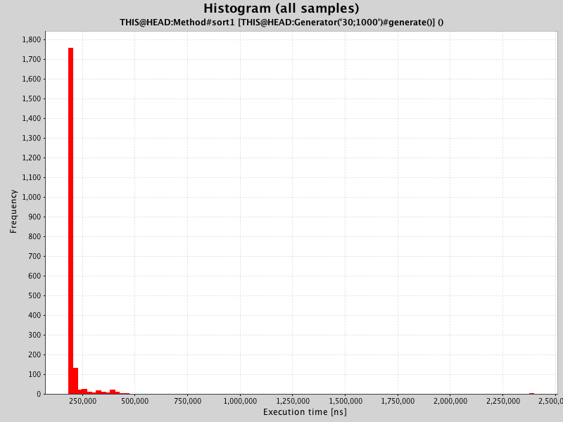
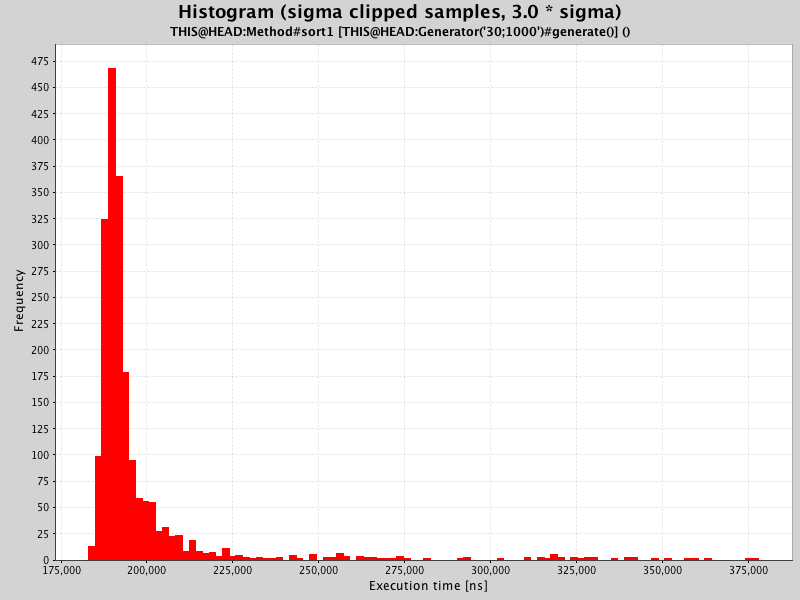
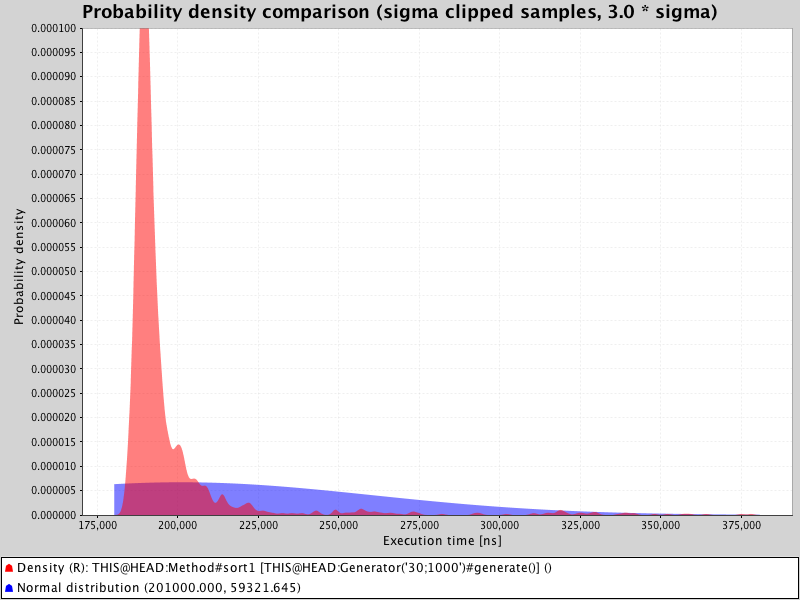
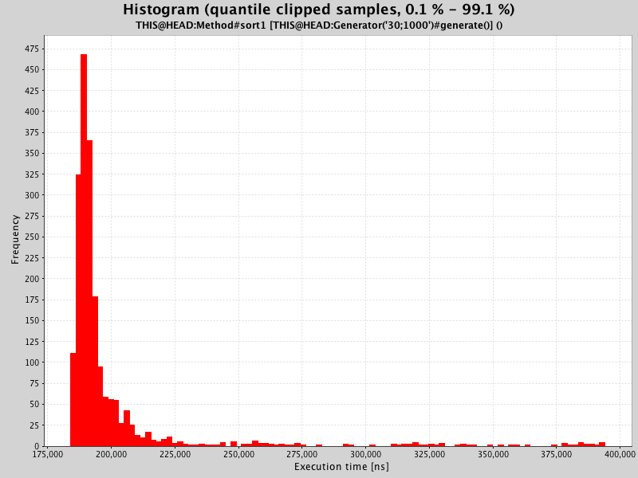
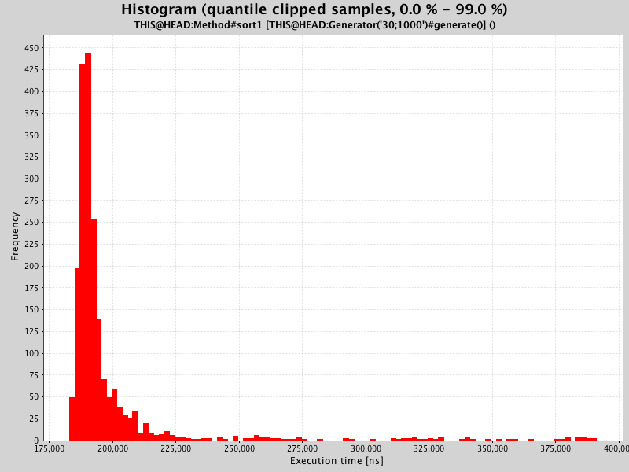
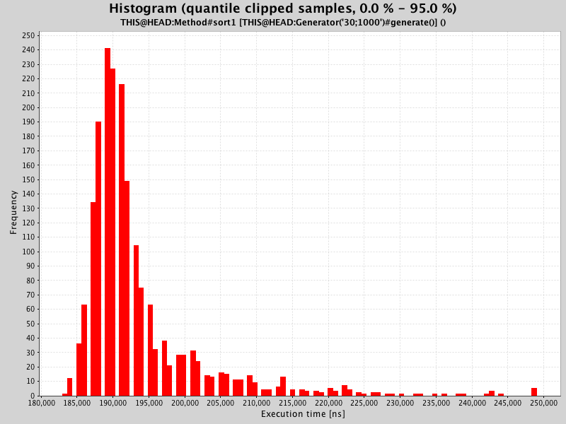
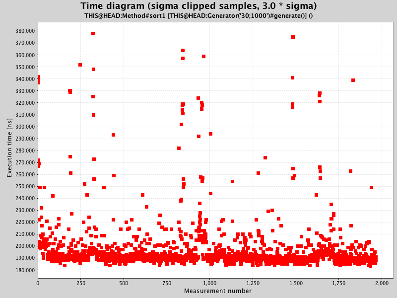
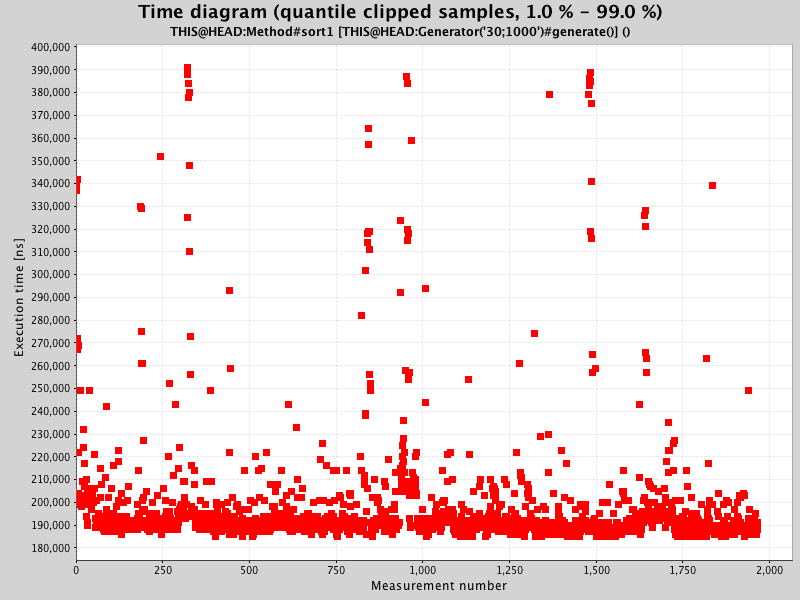

Measurement detail
| Method | THIS @ HEAD : main.Method #sort1 |
| Generator | THIS @ HEAD : main.Generator('30;1000')#generate () |
| Generator parameters | no parameters specified |
| Measured date | 01-Jul-2016 12:12:20 |
| Measured on | Lotties-MacBook-Air.local (local) |
Statistical data
 Sample count Sample count |
2000 |
| Warmup count | 1000 |
| Mean | 201.00 µs |
| Standard deviation | 59.32 µs |
|
Standard deviation / mean |
29.51 % |
| Median | 191.00 µs |
|
Median / mean |
95.02 % |
| Minimum | 183.00 µs |
| Maximum | 2398.00 µs |
Histogram(all samples)

Histogram(sigma clipped samples, 3.0 * sigma)

Density comparison(sigma clipped samples, 3.0 * sigma)

Histogram(quantile clipped samples, 0.1 % - 99.1 %)

Histogram(quantile clipped samples, 0.0 % - 99.0 %)

Histogram(quantile clipped samples, 0.0 % - 95.0 %)

Time diagram(sigma clipped samples, 3.0 * sigma)

Time diagram(quantile clipped samples, 1.0 % - 99.0 %)
